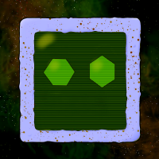

Slimefun Plugin

Slimefun is a plugin to Minecraft server software called Spigot, and its fork Paper.
The plugin enhances player experience by providing technical and magical gadgets, systems and automation options.
Essentially, it lets the player to become the wizard or engineer they want to be.
Plugin allows you to automate the production of any ingame item including the plugin's own items.
I have worked with over 230 contributors in this open source project and made over 170 commits.
Click here if you wish to learn more!
VampirKöylü Game
Vampir Köylü is a browser based party game based on the children's game of the same name.
At the start of the game a role will be picked for you from 3 options; Vampire, Wizard or Villager.
And you will try and win the game by either killing the villagers and the wizard or by finding the vampires and executing them.
I have worked with a team of 4 people for about a year to realise this game.
Click here if you wish to try it yourself!
RunAndScore Game
Run And Score is a runner-type hyper-casual game that has been made in a week.
This is my first ever Unreal Engine 5 project that I have finished.
It uses very basic and starter assets in some places, however with the gameplay-loop and the other gimmicks, it feels like the finished product it is.
This was a personal project that I have developed in order to learn how to use Unreal Engine 5.